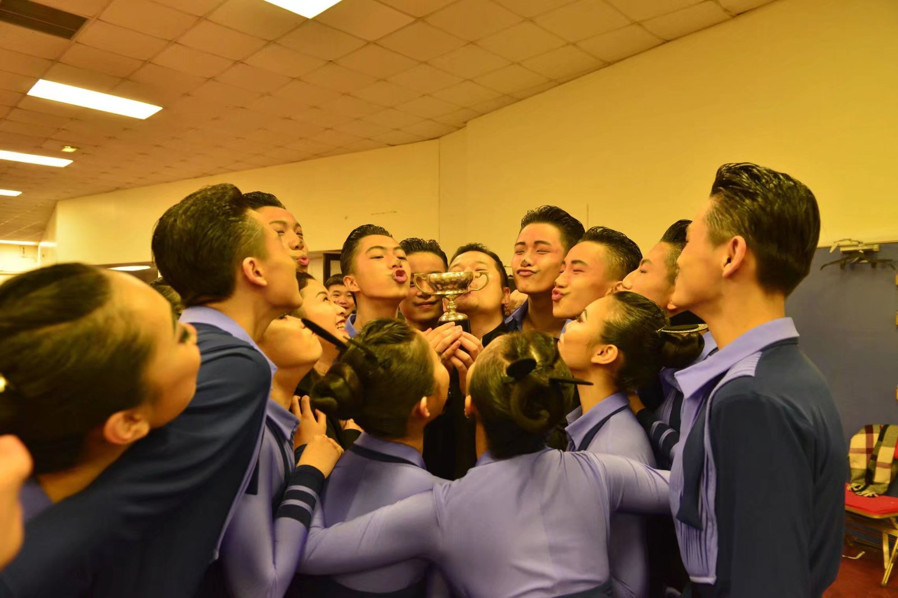
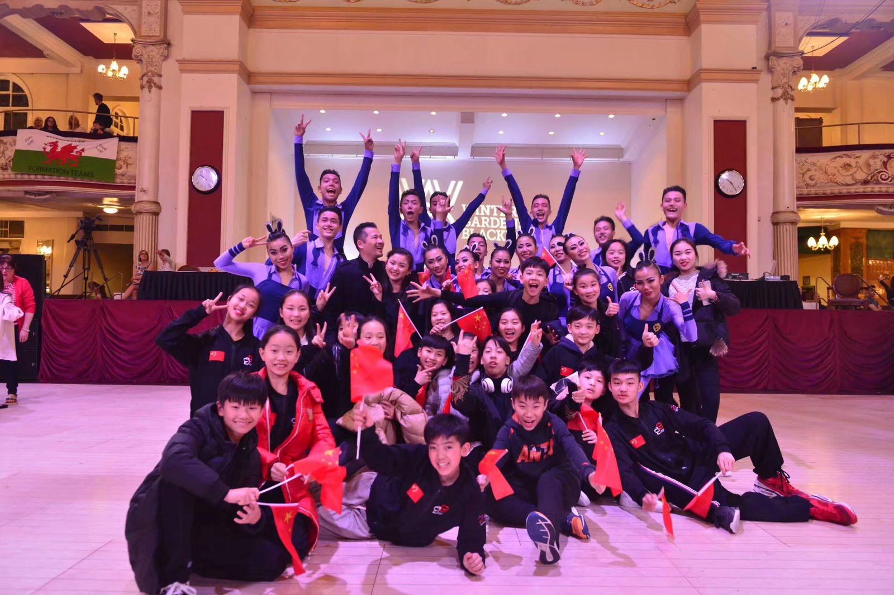

Beijing Baihui Dance
Zootopia
Formation Team (团体舞)Member of the eight-couple formation team that took first place at the 2017 Blackpool Junior Dance Festival, competing against fourteen teams across three rounds at the Winter Gardens, Blackpool. Zootopia was Beijing Baihui Dance’s formation entry that year.

Result
Winter Gardens, Blackpool
The Blackpool Junior Dance Festival is the youth edition of the Blackpool Dance Festival, held at the Winter Gardens. Beijing Baihui Dance entered the formation team category with Zootopia, danced by eight couples, and placed first from a field of fourteen teams over three rounds.
- Event
- Blackpool Junior Dance Festival, 2017
- Venue
- Winter Gardens, Blackpool
- Category
- Formation team
- Team
- Beijing Baihui Dance
- Work
- Zootopia (疯狂动物城)
- Formation
- Eight couples
- Result
- First place, from fourteen teams across three rounds
- Role
- Member of the winning formation team


Team Record
Beijing Baihui Dance, post-competition report, 2017
The team list circulated by Beijing Baihui Dance after the competition names sixteen dancers, the eight couples of the formation, including 文镇豪 (Zhenhao Wen).
The original listing is a private post. It is retained as source documentation and is available on request; it is not reproduced here because it carries the other members’ names.